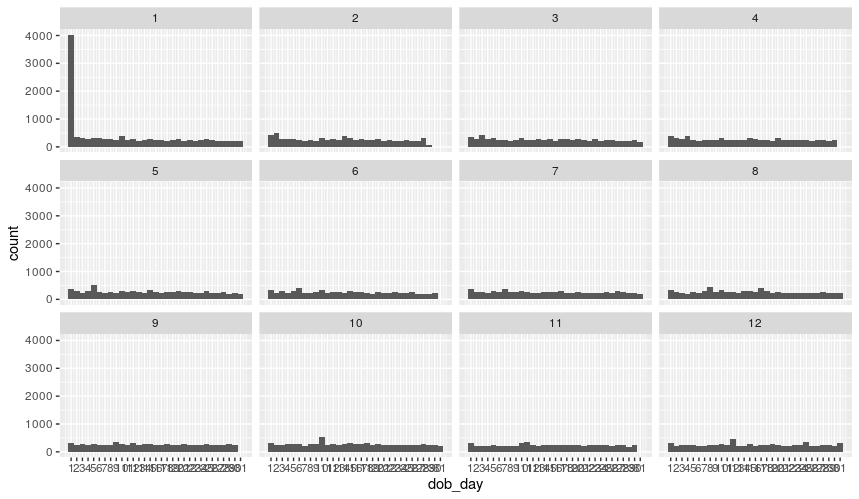
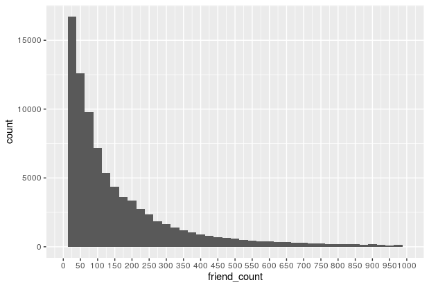
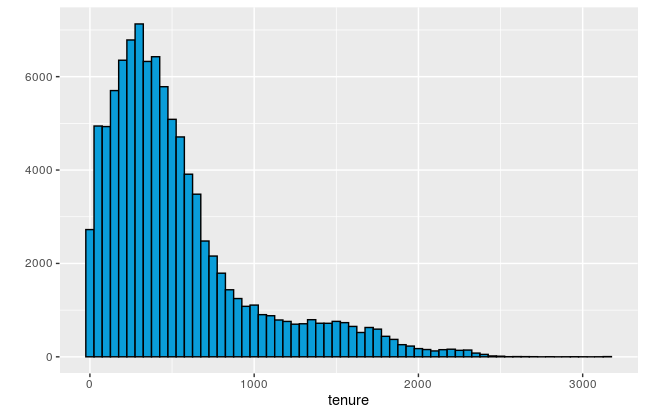
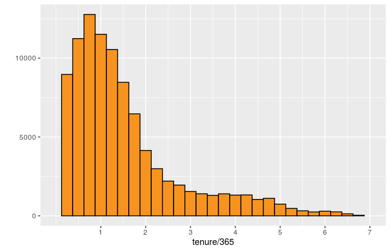
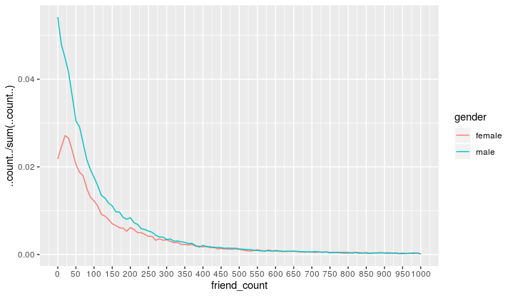
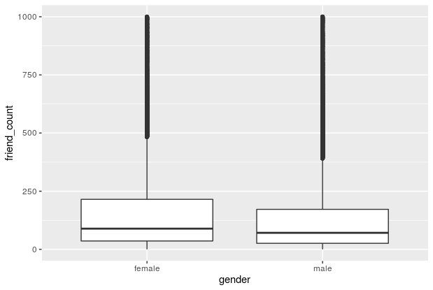
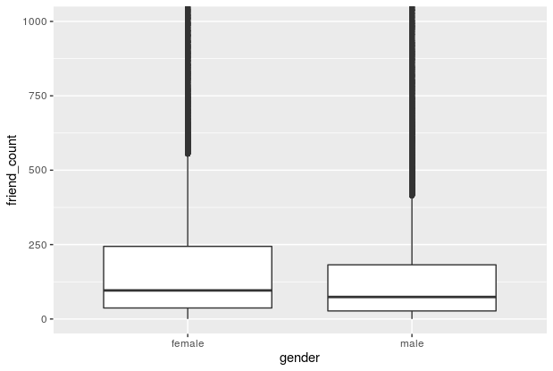

Installation
Install ggplot2
install.packages('ggplot2')
library(ggplot2)
Install gridExtra
install.packages('gridExtra')
library(gridExtra)
qplot(data=subset(df, !is.na(www_likes)), x=www_likes,
geom='freqpoly', color=gender,
xlab='WWW LIKES (TITLE)',
ylab='Y TITLE')+
scale_x_log10()
1. Histograms
1.1. using scale_x_continuous()
1. using qplot()
qplot(x=dob_day, data=df) +
scale_x_continuous(breaks=1:31) +
geom_histogram(binwidth = 1)
2. using ggplot()
ggplot(aes(x = dob_day), data = pf) +
geom_histogram(binwidth = 1) +
scale_x_continuous(breaks = 1:31)
1.2. using facet_wrap()
we use it, to make interaction between 2 variables.
qplot(x=dob_day, data=df) +
scale_x_continuous(breaks=1:31) + # scale x axis to that limit
facet_wrap(~dob_month, ncol=3)
ggplot(data=df, aes(x=dob_day)) +
geom_histogram(binwidth = 1) +
scale_x_continuous(breaks = 1:31) +
facet_wrap(~dob_month)
# this
qplot(data=df, x=friend_count, xlim=c(0, 1000))
# or this
qplot(data=df, x=friend_count) +
scale_x_continuous(limits = c(1, 1000))
# Using ggplot
ggplot(aes(x = friend_count), data = pf) +
geom_histogram() +
scale_x_continuous(limits = c(0, 1000))
# 1. using qplot
qplot(x = friend_count, data = pf, binwidth = 25) +
scale_x_continuous(limits = c(0, 1000), breaks = seq(0, 1000, 50))
# 2. using ggplot
ggplot(aes(x = friend_count), data = pf) +
geom_histogram(binwidth = 25) +
scale_x_continuous(limits = c(0, 1000), breaks = seq(0, 1000, 50))

#### Using qplot
# First Trial
qplot(data=na.omit(df), x=friend_count, binwidth=10) +
scale_x_continuous(lim=c(0, 1000), breaks=seq(0, 1000, 50)) +
facet_wrap(~gender)
# Second Trial
qplot(data=subset(df, !is.na(gender)), x=friend_count, binwidth=25) +
scale_x_continuous(lim=c(0, 1000), breaks=seq(0, 1000, 50)) +
facet_wrap(~gender)
#### Using ggplot
ggplot(aes(x = friend_count), data = subset(pf, !is.na(gender))) +
geom_histogram() +
scale_x_continuous(limits = c(0, 1000), breaks = seq(0, 1000, 50)) +
facet_wrap(~gender)
#### Using qplot
# Note: The I() functions stand for 'as is' and tells qplot to use them as colors.
qplot(data=df, x=tenure, color=I('black'), fill=I('#099DD9'), binwidth=50)
qplot(data=df, x=tenure/365, binwidth=.25,
color=I('black'), fill=I('#F79420')) +
scale_x_continuous(breaks=seq(1, 7, 1), limits=c(0, 7))
#### Using ggplot
ggplot(aes(x = tenure/365), data = pf) +
geom_histogram(binwidth = .25, color = 'black', fill = '#F79420')


library(gridExtra)
# Using 1. qplot:
p1 <- qplot(data=df, x=friend_count)
p2 <- qplot(data=df, x=sqrt(friend_count))
p3 <- qplot(data=df, x=log1p(friend_count))
# NOTE: the x axis here, we have log scale not the actual counts.
grid.arrange(p1, p2, p3, ncol=1)
# Using 2. ggplot
p1 <- ggplot(data=df, aes(x=friend_count)) + geom_histogram()
p2 <- p1 + scale_x_log10()
p3 <- p1 + scale_x_sqrt()
# NOTE: the x axis here, will have the actual counts not the log counts.
grid.arrange(p1, p2, p3, ncol=1)
2.1 Normal one
# using qplot
qplot(data=subset(df, !is.na(gender)), x=friend_count,
binwidth=10, geom='freqpoly', color=gender) +
scale_x_continuous(lim=c(0, 1000), breaks=seq(0, 1000, 50))
# using qplot
qplot(data=subset(df, !is.na(gender)), x=friend_count, y= ..count../sum(..count..),
binwidth=10, geom='freqpoly', color=gender) +
scale_x_continuous(lim=c(0, 1000), breaks=seq(0, 1000, 50))
# Using ggplot
ggplot(aes(x = www_likes), data = subset(pf, !is.na(gender))) +
geom_freqpoly(aes(color = gender)) +
scale_x_log10()

3.1 Regular
# using qplot
qplot(data=subset(df, !is.na(gender)), x=friend_count,
binwidth=10, geom='boxplot', color=gender) +
scale_x_continuous(lim=c(0, 1000), breaks=seq(0, 1000, 50))
# using coord_cartesian doesn't change the values of median and quantiles unlike scale_y_continuous()
qplot(data=subset(df, !is.na(gender)), y=friend_count, x=gender,
geom='boxplot')+
coord_cartesian(ylim=c(0, 1000))
